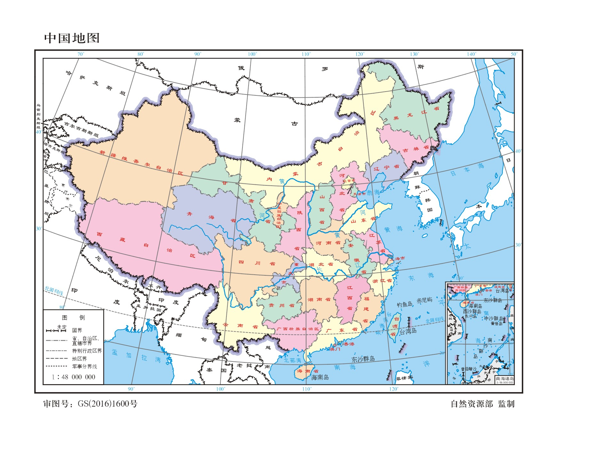
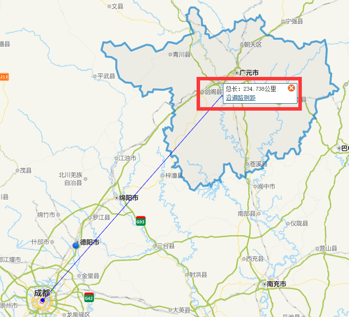
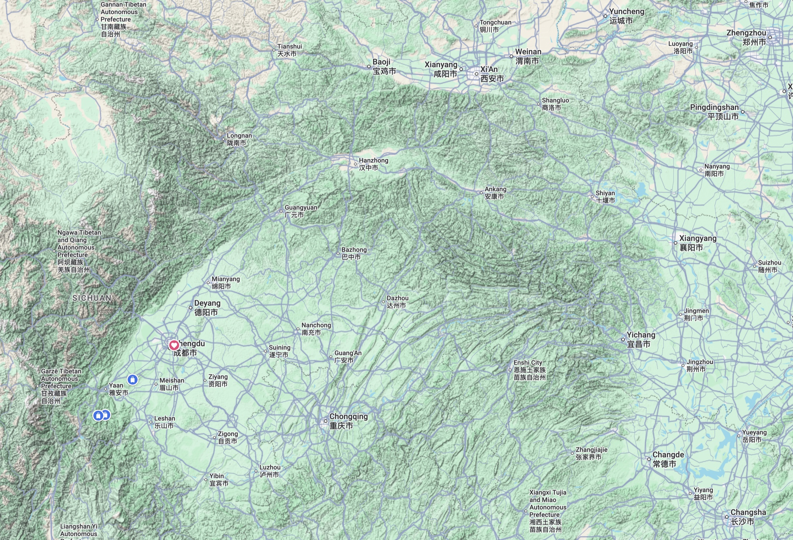
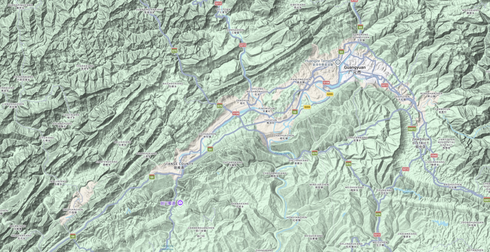
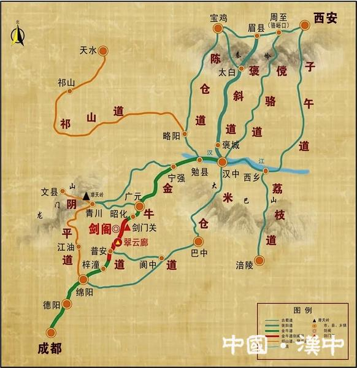
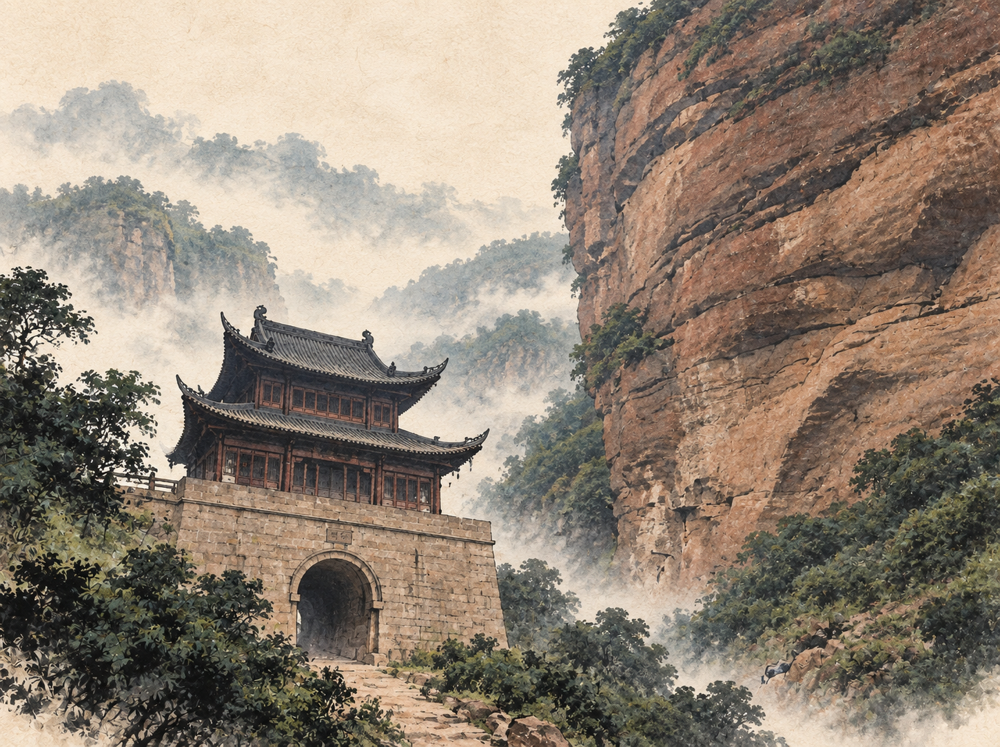

第一章 · 地图册
我们一起，
在地图上找剑门关
先找位置，再看地形。从整个中国一步一步走近四川北面的山门。
- 中国
- 四川
- 山脉
- 剑门
先找到四川
- 先找地图右上方的北京。
- 再把目光向左、向下一点点移动。
- 找到写着“四川省”的淡黄色区域。
四川在中国的西南部。地图上看起来只是一个省，但它的面积很大，里面既有高原，也有盆地和群山。

成都在下面，广元在上面
- 先在左下方找到成都：这是我们出发的地方。
- 再顺着蓝线向上看，找到广元。
- 红框标出的剑门关，离广元更近，正好卡在从北面走向成都的路上。
这一张只看三个地方就够了：成都、广元、剑门关。先把它们的上下关系记住，再去看复杂的全省地图。

陕西和四川之间，横着两层山
先在图上找西安、汉中和成都。西安与汉中之间横着秦岭，汉中与四川盆地之间又横着大巴山。想从关中进入四川，不能笔直向南走，必须在山脉里寻找河谷、山口和少数能通行的道路。
眼前没有高速公路、隧道和高架桥。人要步行，货物靠人背或骡马驮；遇到悬崖，只能走贴着石壁架起的栈道。道路一窄，整支队伍就会排成长线；下雨、落石或前方道路损坏，都可能让所有人停下来。
所以蜀道之“难”，不只因为山高，还因为可以选择的通道太少。
先看图上三块较平的地方：西安附近、汉中附近、成都附近。再看它们之间两条深绿色、满是褶皱的山带——那就是秦岭和大巴山。
剑门关、秦岭、大巴山与四川盆地文字为网页阅读标记；原图地名、道路和地形没有重绘。四川精确省界请对照第一张标准地图。

山脉像墙，通道像门缝
广元和剑阁附近不是一座孤零零的山，而是一层层东北—西南走向的山脊。道路只能顺着河谷和山间通道前进，剑门关正落在其中一处关键窄口。
- 右上方找到广元。
- 左下方找到剑阁县。
- 红色标记处就是剑门关。
用两根手指放大地图，沿着道路从广元滑到剑门关，看看它怎样绕着山走。

沿着古蜀道，把手指从西安滑到成都
绿色线路从西安、汉中一路向南，经过宁强、广元、昭化、剑阁和剑门关，最后到达成都。这就是金牛道的大致方向。
请用手指沿着绿线走一遍。走到“剑门关”时停下来：这里为什么偏偏要设一道关？


山壁在两边，古道从中间穿过去
“关”并不是随便修在山里的一栋楼。大小剑山横在古道前方，两山之间留下的通路很窄。守住这里，就等于守住了北面进入四川的一处重要入口。
所以，“一夫当关，万夫莫开”写的首先是地理，然后才是勇敢。
已经找到剑门关了